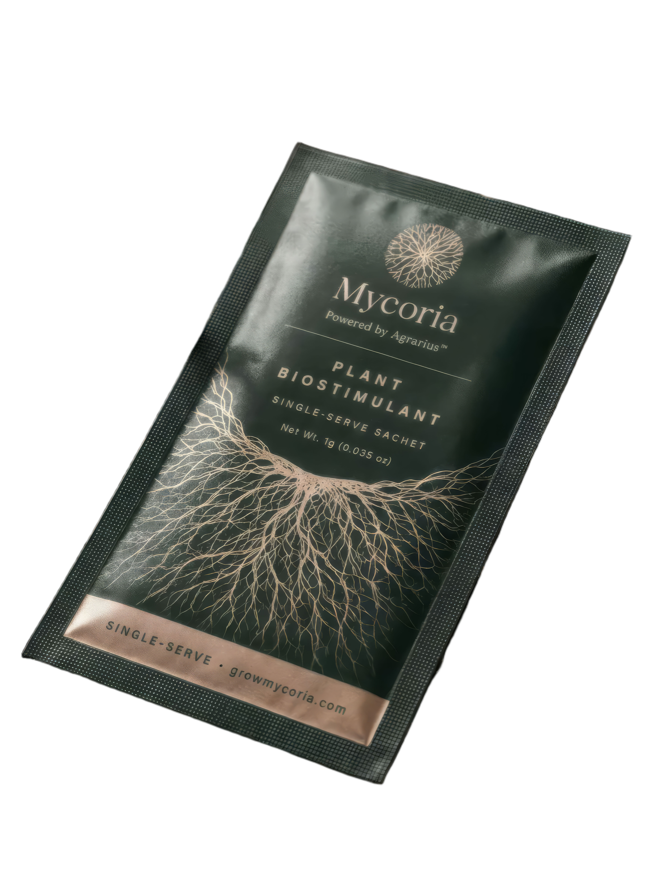
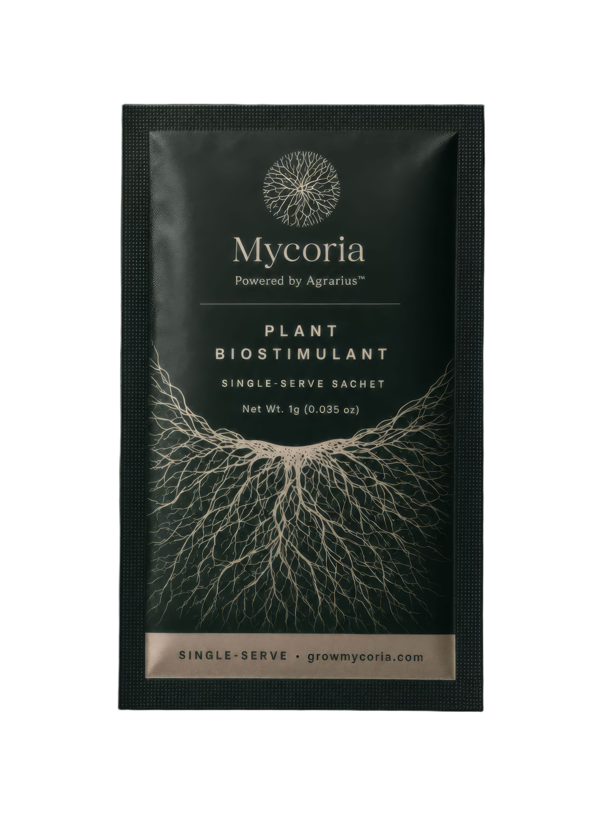
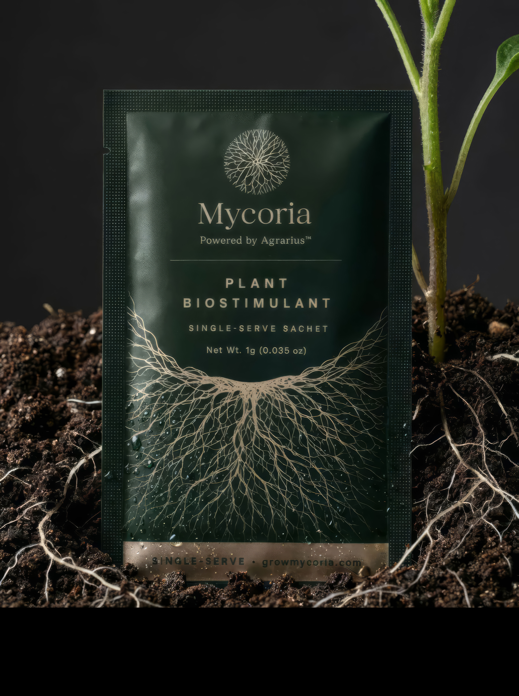
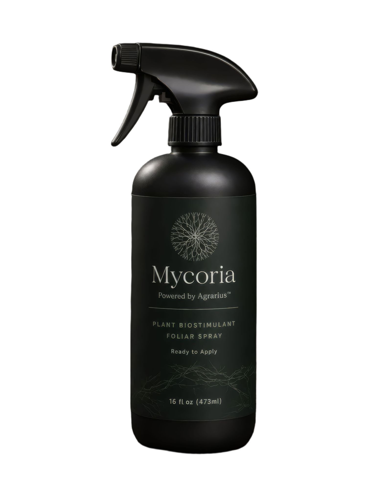
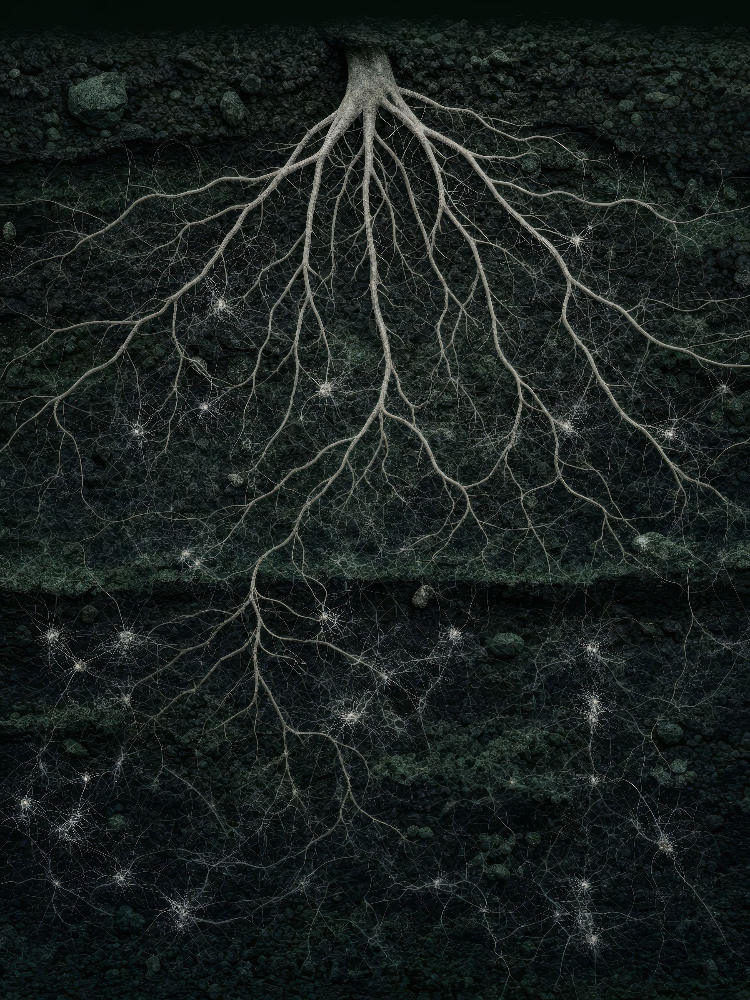
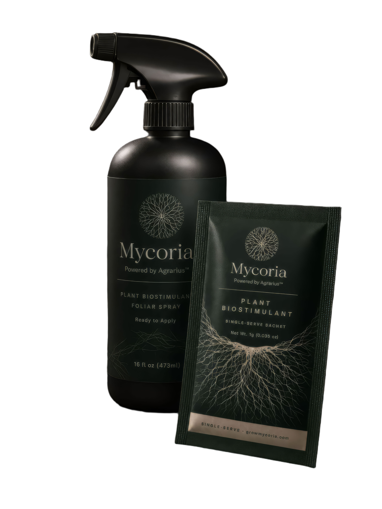

A BRAND PRESENTATION FOR MVMD INC.
The Biology Was Always There.
Now It Has a Brand.
A premium DTC biostimulant brand built on MVMD's Agrarius™ science.
Mycoria · Confidential · Prepared for MVMD Inc. · 2025

MYCORIA
"Soil Biology. Stronger Plants."
"Stronger Roots. Better Grows."
"One product. The rest is biology."
THE PRODUCT
One sachet.
One application.
One biology.
Applied as a foliar spray. Active within hours. Zero residue.


THE NAME
MYCORIA
myco- · the mycorrhizal network beneath every plant's roots
-oria · Latin for realm, domain, destination
Mycoria: the realm of the underground network.
THE ARCHITECTURE
Three tiers. Each holds its equity.
Exactly as Eons operates with Quicksome™. Consumer equity. Ingredient equity. Parent equity. All compounding independently.

SECTION 02
What Agrarius™
Actually Does
250+ third-party field trials. 89% success rate. The mechanism is real.
THE MECHANISM
Dual vascular pathway.
No conventional input can claim this.
Applied as a foliar spray, Agrarius™ enters through leaf stomata and travels through both xylem and phloem simultaneously. The signal reaches the root zone within hours. There, it propagates through existing mycorrhizal networks. The plant doesn't work harder. It works smarter.

FERTILISER UPTAKE EFFICIENCY
fertiliser utilisation with Agrarius™
For a home cannabis grower spending $800/yr on nutrients, the same yield from a fraction of the input cost.

THIRD-PARTY FIELD TRIAL · MARATHWADA, INDIA · COTTON
yield increase
Independent trials in Marathwada. One participating farmer eliminated his second fertiliser application entirely. The soil returned structural improvement, not depletion.

THIRD-PARTY FIELD TRIAL · URUGUAY · LICENSED CANNABIS
ahead of untreated controls
For a commercial operation, two weeks is one additional harvest cycle per year. Independent lab: zero detectable Agrarius™ residue. Compliance integrity is not a caveat. It is a selling point.
SECTION 03
A $718M Serviceable Market.
No Premium Brand In It.
The $7M 18-month target is 1% of that number. This is what conservative looks like.
Three addressable tiers. $718M combined.
TIER 1
Home Cannabis Growers
$1.24B TAM
$496M SAM
3M active growers. 7 sachets/yr average.
TIER 2
Citrus Belt Households
$354M TAM
$89M SAM
4M households. HLB-driven urgency. Premium input buyers.
TIER 3
Homestead & Regenerative
$443M TAM
$133M SAM
5M households. Values-aligned. Science-narrative converts.
WHY NOW
The regulatory moment
EU FPR came into effect 2022, created the formal PFC 3 legal pathway. Agrarius™ holds the certification (2028-DE.1481). OMRI listing in progress. Credentialled entrant at the exact moment the category is formalised.
The consumer shift
80M US adults now garden, grow food, or cultivate plants at home, applying the same premium-input logic to plants they already applied to supplements and coffee. Humic-based biostimulants market: $591M (2024) rising to $1.42B by 2035. The product and the cultural moment are aligned.
SECTION 04
The Premium DTC Plant Biostimulant Category
Does Not Exist Yet.
This is not a crowded market. It is an unclaimed one.
What exists. Why it doesn't compete.
RAW Humic Acid, NPK Industries
Closest analog. Zero brand. Commodity positioning. Not DTC.
Down to Earth
Granular, retail-only. No DTC, no subscription, no science narrative.
Simple Lawn Solutions
8% concentration. Lawn-only. No premium ceiling.
BioAg TM-7
Industry-grade B2B. No consumer product. The home grower has nowhere to go. Until Mycoria.

The AG1 / Seed Health moment
for plant biology.
In 2012, the probiotic category was fragmented, ingredient-led, and pharmacy-shelf. AG1 and Seed Health built the consumer layer the science was waiting for. Seed Health: Target's fastest-growing supplement brand. AG1: crossed $100M ARR. Category: $3.29B market.
Mycoria is the same move. The science (Agrarius™) is validated. The regulatory classification exists. No premium consumer brand has been built on it. The shelf is empty. The cultural moment, mycorrhizal networks, soil health, regenerative growing, is accelerating into exactly the communities Mycoria will sell into.
SECTION 05
Mycoria Is a Built Brand.
Not a Concept.
Name. Architecture. Voice. Visual system. Packaging. Domain. All resolved.
The Palette
The Typography
MYCORIA
Soil Biology. Stronger Plants.
Agrarius™ field trial data. 250+ trials. 89% success.
CORMORANT GARAMOND · DISPLAY / HEADLINES
INTER · BODY / DATA / CAPTIONS
THE PRODUCT FORMAT
Single-serve sachet.
The format is a deliberate choice.
Removes volume anxiety from first purchase.
Enables precise dosing storytelling.
The grower who runs out at week 8 does not want to wait. They subscribe.
SECTION 06
What Our Agentic Systems
Bring Is Not Just Brand Design.
It Is an Operating System.
Every pipeline below replaces what would conventionally cost $300K-$600K/yr in agency spend.
Four pipelines. Owned, not rented.
SEO ENGINE
Organic Traffic That Compounds
13-phase system · Agentic content · Programmatic long-tail · Technical SEO native. Organic traffic begins compounding from month 3. By month 12, SEO is a structural CAC advantage.
RETENTION OS
The Lifecycle That Turns One Purchase Into a Subscription
Full lifecycle · Segment-aware · FIFRA-compliant gates. Target: 40%+ repeat purchase rate within 6 months, from lifecycle flows alone.
SOCIAL + CONTENT ENGINE
Content That Earns Trust Before It Asks for a Sale
Agentic brief to creative to humanisation to distribution · UGC pipeline · Meta restricted-category playbook.
SOVEREIGN WEB STACK
A Tech Stack That Owns the Customer Relationship
Next.js · Medusa.js · Vercel · Supabase · Chatwoot · Zero Shopify dependency. When Shopify bans a category (and it has), Medusa-powered stores don't receive that email.
What a normal DTC launch costs.
| Marketing agency | $15-30K/mo | Included |
| SEO | $5-10K/mo | Included |
| Email/SMS retention | $3-8K/mo | Configured |
| Developer | $15-25K/mo | Deployed |
| Social management | $5-8K/mo | Agentic |
| Total | $43-80K/mo | Infrastructure cost, not recurring agency spend |
Before a single dollar of paid ad spend.
SECTION 07
The Unit Economics Are Exceptional.
Here Is Every Number, Defended.
Gross margin. CAC. LTV. The $7M path. All sourced.
$25
MSRP · Single sachet
For a cannabis grower, $25 is a rounding error relative to nutrient spend.
$69
4-pack subscribe & save
~$17.25/sachet. One subscribe covers one full grow cycle. The reminder is biological, not marketing.
~$60
Blended AOV
At 60/40 single-to-subscription mix, blending to 40/60 by month 12.
$7M in 18 months. 0.97% of SAM.
| Window | Active Customers | Revenue | Blended CAC |
|---|---|---|---|
| 90 days | 1,000 | $50,000 | <$40 |
| 6 months | 5,000 | $300,000 | <$35 |
| 12 months | 25,000 | $1,800,000 | <$30 |
| 18 months | 70,000 | $7,000,000 | <$25 |
SECTION 08
Phased. Disciplined.
No Wasted Months.
Four phases. National from day one. Data directs spend.
Days 1-90
Foundation
1,000 customers · $50K
Tech deployed. Content seeded. Paid acquisition launched. Email lifecycle live.
Months 4-6
Momentum
5,000 customers · $300K
Organic begins. UGC pipeline activates. Second segment activated.
Months 7-12
Scale
25,000 customers · $1.8M
Retention data in. LTV curves visible. All three segments active.
Months 13-18
Compound
70,000 customers · $7M
Subscription base dominant. Organic carries load. $7M run-rate.
National launch from day one. No geographic restrictions. Paid spend follows the data.
THE RELATIONSHIP
This is not a pitch for a retainer.
This is an operating partnership.
Mycoria is the consumer surface. Agrarius™ is the science. MVMD is the silent partner. Each layer holds its equity. None dilute the others.
The science has been working for decades. It was just waiting for someone to build it a front door.
Mycoria · Powered by Agrarius™ · growmycoria.com · Confidential, prepared for MVMD Inc. · 2025